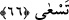
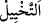
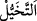
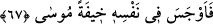
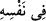

66. “Hayır, siz atın.” dedi. Bir de baktı ki, büyüleri sayesinde ipleri ve sopaları,
kendisine gerçekten koşuyor gibi görünüyor.
Mûsâ; “Hayır” önce ne atacaksanız “siz atın.” dedi.”
Fakir (Bursevî) der ki: “Anlaşılan o ki Allah Teâlâ sihirbazlara seçme hakkını Mûsâ
(a.s.)’ a bırakmalarını ilhâm etti, Mûsâ (a.s.)’a da hak ile bâtılın ayırt edilmesi için önce
onların atmasını ihtiyar etmesini öğretti. Çünkü hak, bâtılı giderir ve yok eder. Eğer Hz.
Mûsâ, onlardan önce atsaydı, büyük bir yılana dönüşen asâdan korkarlardı. Daha işin
başında herkes oradan ayrılırdı. Nitekim asâ, büyücülerin bıraktığı ip ve odun
parçalarını yutunca, bütün insanlar bundan korkarak dağıldılar. Bu ise maksada halel
getirir.
İmam (Râzî) şöyle der: “Eğer “Hz. Mûsâ onlara nasıl olur da iplerini atmalarını
emreder? Halbuki onların yaptıkları sihirdir ve küfürdür!” denilirse, şöyle cevap
veririz: Bir şüpheyi izâle etmek için bu bir yol olarak görüldüğü zaman câiz olur.”
el-Es’iletü’l-mukhime’de şöyle der: “Hz. Mûsâ’nın sözü emir değildir. Bu, böylece
onları hafife almak ve buna aldırmamaktı. Çünkü o, sihirbazların yapacakları ile bâtılın
yok olup hakkın açığa çıkacağını biliyordu.”
“Bir de baktı ki, büyüleri sayesinde ipleri ve sopaları, kendisine gerçekten koşuyor
gibi görünüyor.”
“
” bir şeyin hayâlini kendi içinde canlandırmaktır. “
” ise canlandırmaktır.
Esâsen hayal rüyâda, aynada ve görülen şeyin kaybolmasından sonra kalbde/gönülde
görülen sûretler gibi mücerred bir sûrettir. Sonra tasavvur edilen her işin ve hayal
yerine geçen her nahif şahsın sûreti için kullanılmıştır. “
” koşmaksızın hızlıca
yürümek demektir.
Yâni onlar atacaklarını attılar. Yaptıkları sihir sâyesinde ipleri ve sopaları, kendisine
koşuyor gibi göründüğü vakit Mûsâ (a.s.) şaşırdı. Çünkü sihirbazlar onları civa ile
boyamışlardı. Güneş onlara vurduğu vakit hareket edip kıpırdadılar. Böylece onlar Hz.
Mûsâ’ya hareket ediyor gibi göründü.
67. Mûsâ, birden içinde bir korku duydu.
“Mûsâ, birden içinde bir korku duydu.” Yani “Mûsâ (a.s.) ânîden yılanları
karşısında görünce korktu. Mûsâ (a.s.)’ın korkması, yılanlardan nefret etme, onların
sokma ve benzeri bilinen zararlarından sakınma gibi insanın yaratılışında olan nefret
gereğinceydi. Nitekim âyetteki
“
” ifâdesi buna delâlet eder. Çünkü bu kabil korkular kalbin değil nefsin